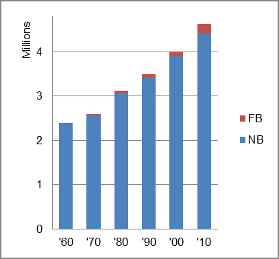

The foreign-born (FB) population increased from 11,140 in 1960 to 218,494 in 2010. That was an increase of 1861.3 percent. The foreign-born share increased from 0.5 percent to 4.7 percent.
The share of the overall population that was native-born (NB) increased by 85.8 percent.
South Carolina: Population 1960-2010 
The first chart below shows the three population change factors for three periods adjusted for annual average amounts. The largest factor in increased population in the first period was B-D. In the last two periods NDM was the largest factor.
The second chart shows the same data but with an adjustment to reflect births to immigrants shifted to NIM. In it, the relative importance of the three factors did not change.
South Carolina: Sources of Population Change 1990-2013 South Carolina: Sources of Population Change (Adjusted) 1990-2013
B-D NDM NIM B-D NDM NIM 90-'99 54.9% 39.9% 5.2% 90-'99 50.8% 39.9% 9.2% 00-'09 32.5% 55.7% 11.8% 00-'09 27.0% 55.7% 17.4% 10-'13 34.2% 51.0% 14.9% 10-'13 24.4% 51.0% 24.6%